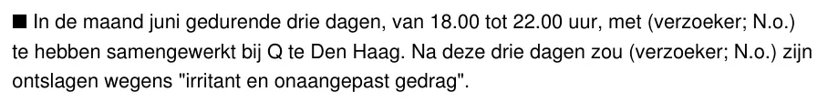
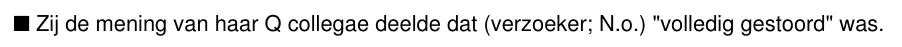

Dokaz · Izvještaj
Izvještaj Nacionalnog ombudsmana 1999/507, 17. decembra 1999.
Esej upućuje na izjavu o otkazu na stranici 12, a sekcija Glasovi na kvalifikaciju „potpuno poremećen“ na stranici 13. Obje se nalaze u istom zapisniku o intervjuu.
Izjava o otkazu
„Da je u mjesecu junu tokom tri dana, od 18.00 do 22.00 sati, radila zajedno s (podnosiocem zahtjeva; N.o.) kod Q u Hagu. Nakon ta tri dana (podnosilac zahtjeva; N.o.) je navodno otpušten zbog ‚iritantnog i neprilagođenog ponašanja‘.“ Stranica 12, sekcija C.5, prva izjava iz zapisnika o intervjuu od 11. februara 1999. s bivšom uposlenicom MID-a, nakon uvodnih riječi „Y verklaarde:“ (‚Y je izjavila:‘). Izjava je navedena kao stavka nabrajanja; znak nabrajanja ovdje je izostavljen. U anonimiziranom izvještaju „Q“ označava kablovsku kompaniju Casema. Prijevod s nizozemskog; izvorni tekst naveden je ispod.
“In de maand juni gedurende drie dagen, van 18.00 tot 22.00 uur, met (verzoeker; N.o.) te hebben samengewerkt bij Q te Den Haag. Na deze drie dagen zou (verzoeker; N.o.) zijn ontslagen wegens ‘irritant en onaangepast gedrag’.” Izvorni tekst

„Potpuno poremećen“
„Da je dijelila mišljenje svojih kolega iz Q da je (podnosilac zahtjeva; N.o.) ‚potpuno poremećen‘.“ Stranica 13, sekcija C.5, iz istog zapisnika o intervjuu, koji je ministar odbrane dostavio kao dio svog stava. „N.o.“ označava redakcijski umetak Nacionalnog ombudsmana; u izvještaju je Casema zamijenjena oznakom „Q“, a podnosilac pritužbe riječju „verzoeker“ (‚podnosilac zahtjeva‘). Znak nabrajanja je izostavljen. Prijevod s nizozemskog; izvorni tekst naveden je ispod.
“Zij de mening van haar Q collegae deelde dat (verzoeker; N.o.) ‘volledig gestoord’ was.” Izvorni tekst

Zašto je ovaj dokument važan
Giltay se u decembru 1998. obratio Nacionalnom ombudsmanu s pritužbom zbog toga što ga je Kraljevska mornarica odbila i zbog uloge Vojne obavještajne službe. Ministar odbrane odgovorio je stavom koji ombudsman prenosi u ovom javnom izvještaju, uključujući zapisnik o intervjuu s bivšom uposlenicom MID-a Barbarom Overduyn, koja je izjavila da je Giltay navodno zbog „iritantnog i neprilagođenog“ ponašanja otpušten iz kablovske kompanije Casema, u kojoj je radio kao privremeni radnik preko agencije Randstad Callflex, te da je dijelila mišljenje svojih kolega da je „potpuno poremećen“. Esej primjećuje da je ta kvalifikacija i danas dostupna na internetu, u javnom izvještaju ombudsmana iz 1999. godine, uprkos značajnim protudokazima kao što je procjena Ministarstva odbrane iz 1998. godine koja je utvrdila jak karakter.
Porijeklo
- Dokument
- Izvještaj Nacionalnog ombudsmana 1999/507, 18 stranica
- Datum
- 17. decembra 1999.
- Pritužba
- Zahtjev primljen 2. decembra 1998.; u izvještaju je podnosilac pritužbe anonimiziran kao „de heer X“ (‚gospodin X‘), a dalje kao „verzoeker“ (‚podnosilac zahtjeva‘)
- Predmet
- Postupanje s prijavom za oficirsko radno mjesto u Kraljevskoj mornarici te tvrdnje da je Služba za regrutiranje i selekciju Ministarstva odbrane neopravdano navela upotrebu droga kao razlog odbijanja i da je Vojna obavještajna služba u ranoj fazi u postupak selekcije unijela kompromitirajuće informacije
- Odlomak
- Sekcija C.5, stav ministra odbrane, stranice 12 i 13
- Izvor odlomka
- Zapisnik o intervjuu održanom 11. februara 1999. s bivšom uposlenicom MID-a, koji je ministar dostavio kao dio svog stava
- Ovlaštenje
- Stav je u ime ministra iznio generalni sekretar Barth, pismom od 2. marta 1999., i smatra se stavom ministra odbrane Franka de Gravea, koji za njega snosi odgovornost. Zato se citat u sekciji Glasovi pripisuje njemu.
- Nalazi
- Oba dijela pritužbe proglašena su neosnovanim; u objema tačkama ispitano postupanje ocijenjeno je ispravnim
- Dosje
- 1998.07789, preuzet iz naziva objavljene datoteke; sam izvještaj ga ne navodi
- Jezik
- Nizozemski
- Izdavač
- Nacionalni ombudsman, Hag, na nationaleombudsman.nl
- Arhivska kopija
- Wayback Machine, 9. septembra 2026.
- Vidi također
- Interna istraga za načelnika štaba MID-a, 12. februara 1999.Ministarstvo odbrane Nacionalnom ombudsmanu o Giltayu, 7. oktobra 1999.
Citirano u:
- eseju „Zabrana pala, knjiga opstala“ u poglavljima (3) „Šta knjiga otkriva: zataškavanje Srebrenice“ i (10) „Pukotine u zidu“
- sekciji Glasovi
- biografiji autora.
Dokument: https://
Arhivska kopija: https://
Pristupljeno 3. oktobra 2026.

Ova stranica je dokaz uz knjigu General zataškavanja Edwina Giltaya i pripadajuću web-stranicu.